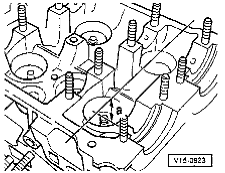

Valve Seat: Testing and Inspection

NOTE:
- When repairing engines with leaking valves, it is not always sufficient to just replace the valves and/or rework the valve seats
- It is also necessary to check the valve guides for wear. This particularly important on high mileage engines.
- The valve seats should be reworked just enough to produce a perfect seating pattern.
- The maximum permissible reworking dimension must be calculated before starting the rework If the reworking dimension is exceeded, the function of the hydraulic lifters can no longer be guaranteed and the cylinder head must be replaced.
PROCEDURE
1. Insert valve and press firmly against seat.
NOTE: If the valve is to be replaced as part of a repair, use the new valve for the calculation.
2. Measure distance -a- between end of valve stem and upper edge of cylinder head.
3. Calculate max. permissible reworking dimension from measured distance -a- and minimum dimension.
- Minimum dimension:
^ Intake valve 34.8 mm
^ Exhaust valve 34.1 mm
4. Measured distance minus minimum dimension = maximum permissible reworking dimension.
Example:
Measured distance 36.5 mm - Minimum dimension 35.8 mm = max. permanent. rework dimension 0.7 mm.
NOTE: If the measured distance -a- is smaller than the minimum dimension, measure again with new valves. If necessary, use shorter valves or replace cylinder head.